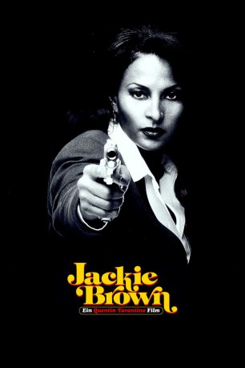

#1920 Jackie Brown
Auszeichnungen: für 1 Oscars nominiert
 
 IMDB-Wertung: 7.5 / 10
IMDB-Wertung: 7.5 / 10  Metascore: 64
Metascore: 64 
Mit Schwarzgeld wird Jackie Brown am Flughafen gestellt. Das FBI wittert die große Chance, durch Jackies Aussage einen Schmuggler-Ring auszuheben. Die Cops sind bereit, Jackie laufen zu lassen, wenn sie den Namen ihres Auftraggebers preisgibt. Die Entscheidung fällt ihr schwer, denn Ordell Robbie, ihr Boss und Drahtzieher der dubiosen Waffen-Schmuggel-Geschäfte, würde sie umbringen, wenn er Wind von einem Deal mit dem FBI bekäme. Bevor sie sich entscheiden kann, kommt alles ganz anders: Sie lernt den Kautionsvermittler Max Cherry kennen. Die beiden schmieden einen Plan, und plötzlich hat Jackie die Idee, wie es ihr gelingen könnte, Ordell gegen die Polizei auszuspielen ...
Jahr: 1997
Dauer: 154 Minuten
FSK: 16
Land: USA Studio: MiramaxTonspuren: DTS - ,
Untertitel: Deutsch, Englisch,
Auflösung: 1080p (1920x1040) Größe: 16588 MB
Genre: Krimi, Drama, Thriller
Regisseur:  Quentin Tarantino
Quentin Tarantino
Drehbuch: Quentin Tarantino, Elmore Leonard
Soundtrack:
Darsteller:
 Pam Grier als Jackie Brown
Pam Grier als Jackie Brown Samuel L. Jackson als Ordell Robbie
Samuel L. Jackson als Ordell Robbie Robert Forster als Max Cherry
Robert Forster als Max Cherry Bridget Fonda als Melanie Ralston
Bridget Fonda als Melanie Ralston Michael Keaton als Ray Nicolette
Michael Keaton als Ray Nicolette Robert De Niro als Louis Gara
Robert De Niro als Louis Gara Michael Bowen als Mark Dargus
Michael Bowen als Mark Dargus Chris Tucker als Beaumont Livingston
Chris Tucker als Beaumont Livingston LisaGay Hamilton als Sheronda
LisaGay Hamilton als Sheronda Tommy 'Tiny' Lister als Winston
Tommy 'Tiny' Lister als Winston- Hattie Winston als Simone
 Sid Haig als Judge
Sid Haig als Judge- Aimee Graham als Amy - Billingsley Sales Girl
- Tangie Ambrose als Billingsley Sales Girl #2
- T'Keyah Crystal Keymáh als Raynelle - Ordell's Junkie Friend
- Diana Uribe als Anita Lopez
- Renee Kelly als Cocktail Waitress
- Gillian White als Mossberg 500 Tammy Jo - Chicks Who Love Guns
 Helmut Berger als Nanni Vitali , archive footage, uncredited
Helmut Berger als Nanni Vitali , archive footage, uncredited Denise Crosby als Public Defender , uncredited
Denise Crosby als Public Defender , uncredited Tony Curtis als Himself , archive footage, uncredited
Tony Curtis als Himself , archive footage, uncredited- Marisa Mell als Giuliana Caroli , archive footage, uncredited
 Glendon Rich als Restaurant Regular , uncredited
Glendon Rich als Restaurant Regular , uncredited- Mary Ann Schmidt als Flight Attendant , uncredited
 Quentin Tarantino als Answering Machine Voice , uncredited
Quentin Tarantino als Answering Machine Voice , uncredited- Ellis Williams als Cockatoo Bartender
- Venessia Valentino als Cabo Flight Attendant
- Elizabeth McInerney als Bartender at Sam's
- Colleen Mayne als Girl at Security Gate
- Laura Lovelace als Steakhouse Waitress
- Christine Lydon als Tec-9 Sidney - Chicks Who Love Guns
- Julia Ervin als Steyr AUG Cindy - Chicks Who Love Guns
- Juliet Long als AK-47 Gloria - Chicks Who Love Guns
- Michelle Berube als Baretta 12S Brittany - Chicks Who Love Guns
- Candice Briese als The Deputy
- Gary Mann als The Deputy
- Jeffrey Deedrick als The Sheriff
- Roy Nesvold als The Sheriff
- Herbert Hans Wilmsen als The Sheriff
Datei: X:\1997\Jackie Brown (1997, FSK16, 1920x1040).mkv seit 02.09.2015
Festplatte: HD 1996-2002
 Es gibt insgesamt 83 Filme in der Gruppe '1997'
Es gibt insgesamt 83 Filme in der Gruppe '1997'